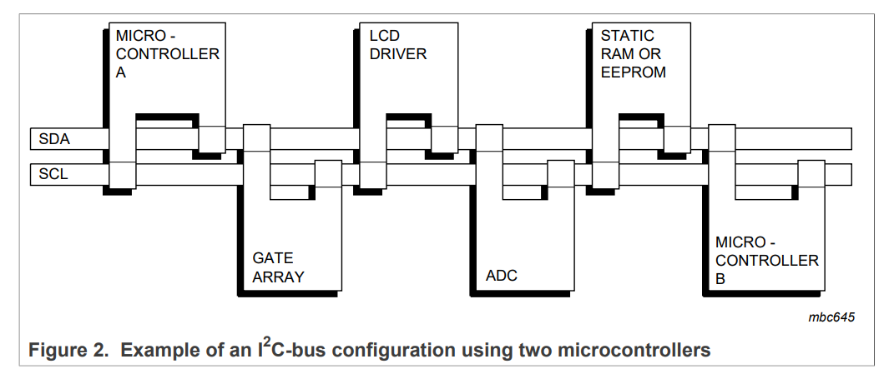
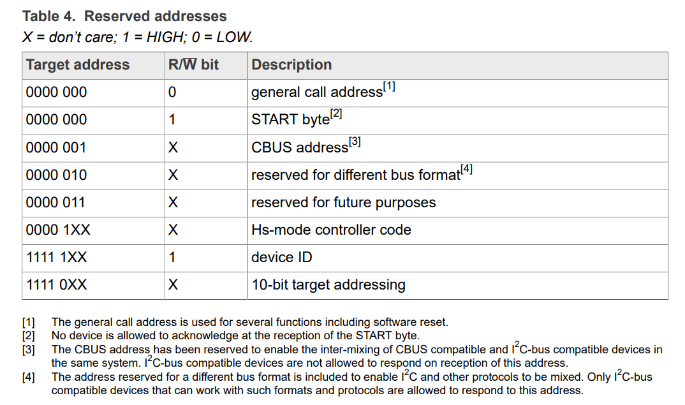
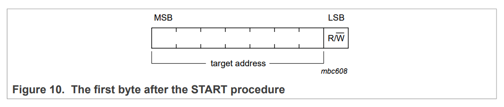
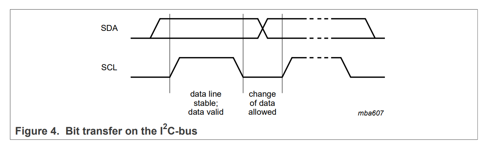
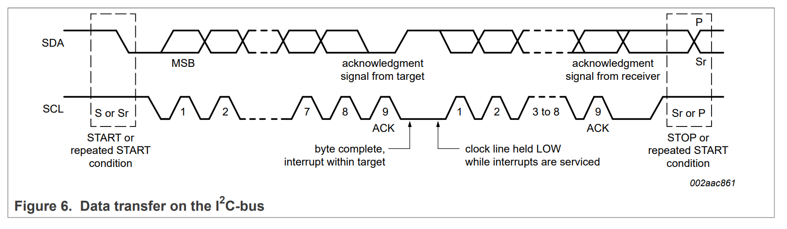
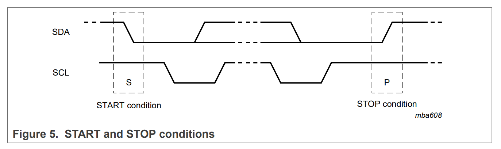
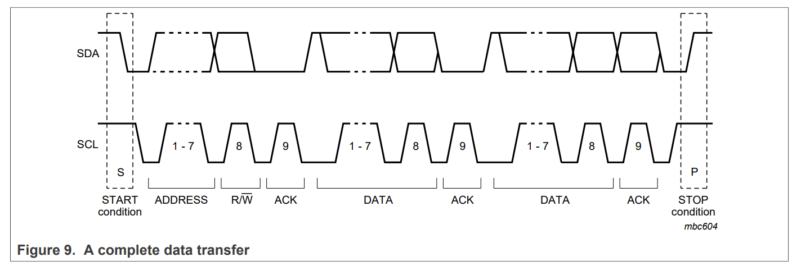
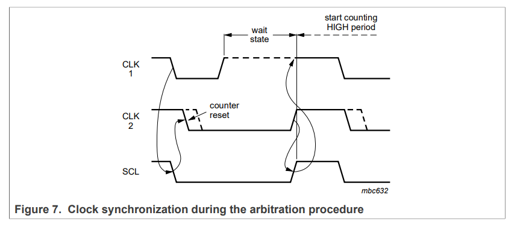
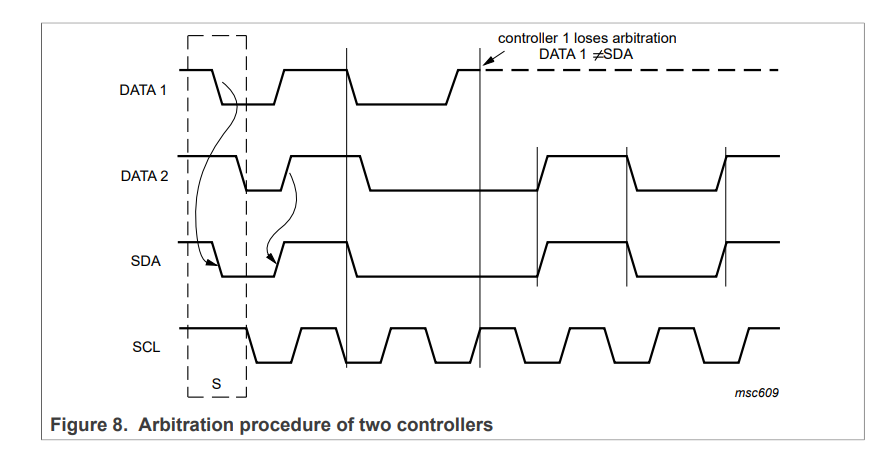

I2C
I2C（Inter-Integrated Circuit）是一种半双工的串行通信协议。
I2C协议的特点
- I2C协议采用两根线（SDA和SCL）进行数据传输和时钟同步。
- I2C协议支持多主机和多从机的通信。
- I2C协议的速率:
- 双向总线(Bidirectional bus):
- Standard-mode (Sm): 100 kbit/s
- Fast-mode (Fm): 400 kbit/s
- Fast-mode Plus (Fm+): 1 Mbit/s
- High-speed mode (Hs-mode): 3.4 Mbit/s.
- 单项总线(Unidirectional bus):
- Ultra Fast-mode (UFm): 5 Mbit/s
- 双向总线(Bidirectional bus):
基本概念
I2C协议需要两条总线：SDA线和SCL线，其均为双向传输线，在总线空闲时，默认均为高电平(open drain or open collector -> wired-And function)。由于线与的逻辑关系，I2C总线上可以挂载多个设备进行通信。
I2C协议支持多主机通信。多主机通信允许多个主设备连接到同一个I2C总线上，可以同时访问从设备。在I2C总线上，任何时候只能有一个主设备控制总线。如果多个主设备试图控制总线，则可能会导致总线冲突。在这种情况下，I2C协议使用仲裁机制解决冲突。每个主设备都会在发送地址或数据前检查总线状态，如果总线上有其他设备正在发送数据，则会等待并重新尝试发送。如果多个设备同时开始发送，则将出现冲突，只有一个设备能够获得总线控制权，其他设备则必须等待。
I2C协议支持多从机通信。多从机通信允许多个从设备连接到同一个I2C总线上，并可以响应来自主设备的操作命令。在I2C总线上，每个从设备都必须具有唯一的地址。I2C协议定义了一些保留地址，这些地址不能用于从设备。
-
SDA：serial data, 用于在主设备和从设备之间传输数据。 -
SCL：serial clock, 用于控制数据传输的时序。
 -
Address：在I2C事务中，主设备通过发送地址来选择一个特定的从设备进行通信。其位长为7位，数据格式为MSB。
 -
R/W bit：主设备发送一个读/写控制位，来指示从设备是读取数据还是写入数据。如果控制位为0，表示主设备要向从设备写入数据；如果控制位为1，表示主设备要从从设备读取数据。
 -
Data：I2C协议对数据的采样发生在SCL高电平期间，除了起始和停止信号，在数据传输期间，SCL为高电平时，SDA必须保持稳定，不允许改变，在SCL低电平时才可以进行变化。其数据格式为MSB。


I2C协议通过发送不同的序列信号来实现数据传输。每个数据传输序列都以一个“start”信号开始，以一个“stop”信号结束。在数据传输序列中，主设备通过发送地址和数据来控制从设备。从设备在接收到地址和数据后进行响应，并将响应发送回主设备。数据传输序列中的每个数据字节都有一个对应的确认信号（ACK）来确认从设备已经接收到数据。
Start：在I2C事务开始时发出的信号，由主设备发出，表明将要开始一个新的数据传输序列。Stop：在I2C事务结束时发出的信号，由主设备发出，表明数据传输序列已经结束。

当每个字节发送完成后，接收方都需要发送ACK信号向发送方确认成功收到了数据字节。在响应阶段，发送方会释放SDA线，接收方此时可以将SDA拉低持续到当前SCL时钟信号的高电平结束。
如果接收方未能正确接收数据字节，则会发送NACK信号，即在ACK位期间将SDA线拉高。此时，发送方可以发送另一个数据字节或生成Stop条件来表示传输结束。
-
Acknowledge：在I2C事务中，接收方每接收到一个8位字节数据，必须发送一个确认信号ACK来向发送方来确认自身已经接收到数据。
 -
Synchronization：时钟同步通过线与实现。SCL线由具有最长低电平周期的主设备决定, 低电平周期较短的主设备在此期间进入高电平等待状态(输出高，线与后低)。
 -
arbitration：原理为线与机制。总线仲裁是按位进行的，主设备发送1个位后，回读总线上的数据与自己发送的相比较。相同，继续发送；否则，退出竞争。此机制可以保证在多个主设备同时启动通信时能够正常进行并且不会丢失数据。

References
[1] NXP Semiconductors. UM10204, I2C-bus specification and user manual[S]. 2021.